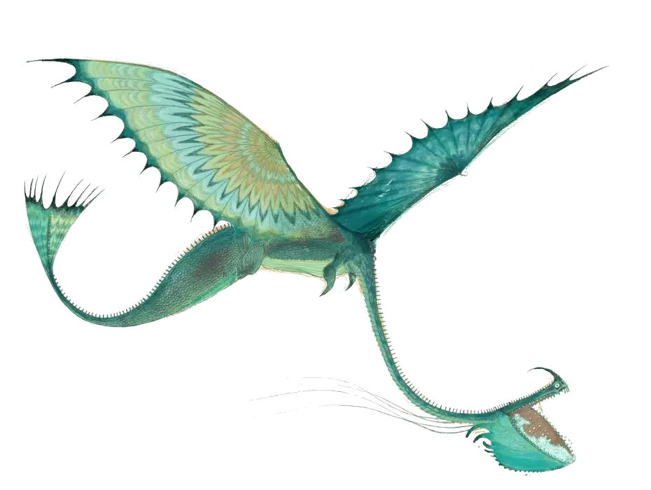
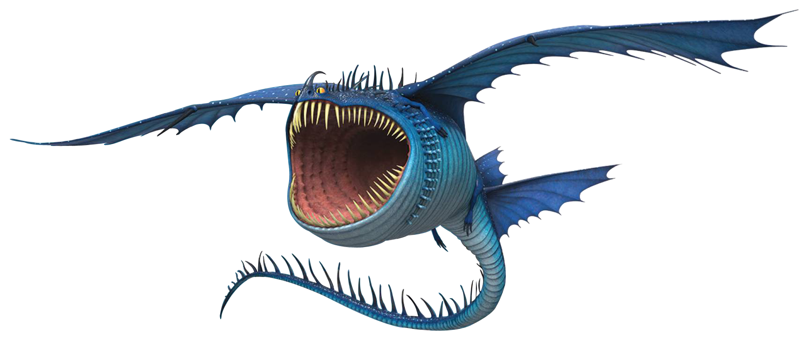

The Tidal Class of dragons primarily live underwater,
these are the dragons Vikings run into trouble with while at sea.
Some species have the ability to survive on land, following a
similar biology to amphibians. These dragons have limited
species that can create flames. However, their abilities lie
in their electricity generation. These dragons are much larger
than the other classes, yet they have been known to be peaceful
and prefer to be left alone. The Dragons of this class include the Scauldron, and the Thunderdrum.
Scauldron
Features
- Long Neck
- Small feet, long claws
- Fan-like tailfin
- Long whisker-like tendrils
Size
- Large: 102 feet 8 inches
(31.29 meters)long
28 feet 2 inches
(8.59 meters) tall
Diet
- Sliquifier
- Fish
- Crab
- Blue Oleander
- Smaller Tidal Class dragons
Statistics
- Attack: 10
- Speed: 6
- Armor: 6
- Firepower: 14
- Shot Limit: 14
- Venom: 10
- Jaw Strength: 4
- Stealth: 10

Thunderdrum
Features
- Expandable mouth
- Two pairs of wings
- Nasal Horn
- Small legs
Size
- Large: 63 feet 10 inches
(19.45 meters) long
7 feet 6 inches
(2.29 meters) tall
Diet
- Flowers
- Fire Weed
- Fish
- Mutton
- Yak
Statistics
- Attack: 16
- Speed: 8
- Armor: 20
- Firepower: 10
- Shot Limit: 2
- Venom: 10
- Jaw Strength: 11
- Stealth: 14
